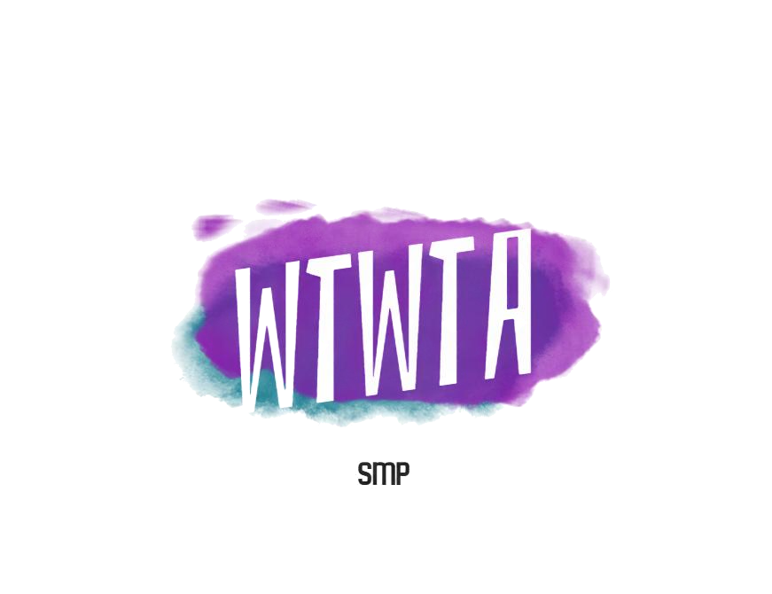

Welcome to WTWTA, or Where the Wild Things are SMP! This is a community focused SMP which is accurate to what SMP actually stands for: Survival Multiplayer. It also works on every version and is cross compatible, so you can join on any version, including nintendo, but you have to have nintendo online.
How to join
You can join with any version, but how you join is different sometimes.
Here are all the ways to join:
General
IP: WTWA.aternos.me
Dyn IP: saury.aternos.host:57054
Bedrock specific
Port: 57054
Nintendo Switch specific
DNS Primary: 104.238.130.180
Tutorial:How to join custom servers on Nintendo Switch [Minecraft Bedrock Tutorial]
Rules
General Rules
- Be friendly and respectful - to all of our members here.
- Make sure to use the appropriate chat channels for the appropriate topics.
- Take care not to dox yourself or others - Let's keep personal info safe!
- Avoid political topics - Politics is important, but this isn't the right place to do that.
- Please don't speak about incidents in other servers here - It's unfair on the people involved.
- Don’t send messages in this channel - It makes it hard to see the rules so dont send messages in here
- PG-13 ONLY, NO EXCEPTIONS - This is self explanatory, but please, this is a very important one.
- Ask a moderator to invite people to the server - We just don't want someone who sends inappropriate/offensive things to be added to the server and cause chaos.
Minecraft Rules
- Try not to grief spawn - We don’t want any griefing near spawn unless given permission.
- No hacking or cheating of any kind - An example of that is x-ray using texture packs, a hacked client or free cam.
- No spam killing or trapping someone's spawn - That’s just plain unfair.
- No using a seed map - The world seed is only available for the mini HUD slime chunk overlay.